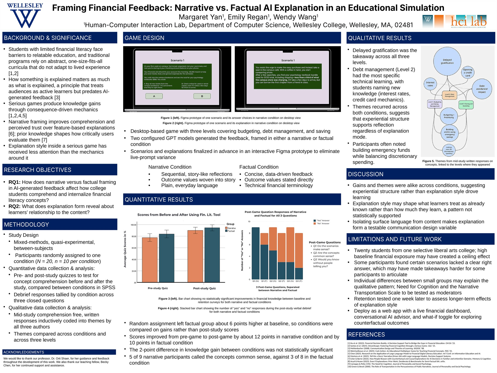
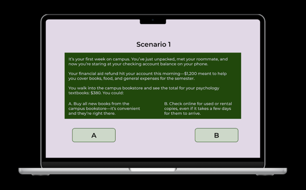
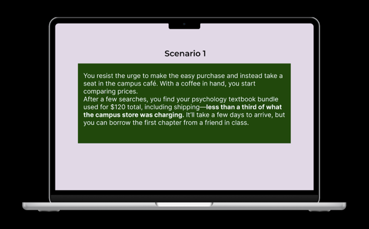

Framing Financial Feedback: Narrative vs. Factual AI Explanation in an Educational Simulation
The “What-If” Financial Decision-Making Simulation is a serious game that uses explainable AI to help college students build financial literacy. Players work through budgeting, saving, and borrowing scenarios, and after each choice a custom GPT-4 model, one per condition, explains what happened and why in either a narrative or a factual mode. It began as a group research project in MAS 366 Human–AI Interaction at Wellesley College in Fall 2025, and that version was accepted to ACM SIGDOC 2026. In Spring 2026 I continued the work with Professor Orit Shaer, my PI, as an independent study, taking it in a different direction.

Open the full poster (PDF) ↗- My role
- Your part in the group project, and in the independent study
- Timeline
- Fall 2025 (class project) · Spring 2026 (independent study)
- Context
- Group research project, MAS 366 Human–AI Interaction, Wellesley College. Continued as an independent study in the Human-Computer Interaction Lab.
- Team
- Maggie Yan, Wendy Wang, and Emily Regan, advised by Prof. Orit Shaer with teaching fellow Becky Chen
- Tools
- Custom GPT-4 models (ChatGPT), Figma
- Methods
- Two-condition quasi-experimental study, pre- and post-study knowledge quizzes, mid-study comprehension surveys, verbal debriefs, thematic analysis
- Participants
- 20 college students, randomly assigned to one of two conditions
What were we trying to find out?
How does narrative versus factual framing in AI-generated feedback affect how college students comprehend and internalize financial literacy concepts? And does the form an explanation takes change how people feel about the content, separately from what they learn from it?
Why this mattered
Traditional financial literacy programs teach abstract concepts with one curriculum for everyone, so students who don’t already know much about money have a hard time connecting what they learn to everyday decisions like budgeting, saving, and whether to spend or invest.
Serious games can help by letting people try out consequences without any real-world risk, and AI can give immediate feedback on each choice. However, the form that feedback takes is a communication design decision in itself. The same outcome can be explained in a narrative way or as a set of numbers, and prior work on explainable AI shows that narrative framing can improve comprehension and trust. What hadn’t been studied was how those explanation styles work in a serious game for learners who aren’t experts.
How we approached it, and why
To find out whether one explanation mode works better than another, we needed to compare them under controlled conditions, so we held everything constant except the explanation style. Both versions of the game deliver the same scenarios, the same consequences, and the same underlying financial principles, and only the surface language changes.
| Method | Why this method | What it gave us |
|---|---|---|
| Two explanation conditions | We needed to isolate the explanation style. Factual feedback uses balances, interest calculations, and financial terms, and narrative feedback tells the same thing as a story in everyday language. | Two versions of the game that differ only in how feedback is phrased. |
| Custom GPT-4 models, finalized in advance | We needed both modes to say the same thing, so two custom GPT-4 models wrote the explanations from the same content and we locked every one of them before data collection, since live prompting would have changed what each participant saw. | Identical content within each condition, delivered through a high-fidelity, visual novel–style Figma prototype. |
| Pre- and post-study quizzes | We needed to track how well participants learned and retained the key financial principles. | Knowledge gains for each condition. |
| Mid-study comprehension surveys | We wanted to capture how participants understood the concepts while they were playing and not just afterward. | Open-ended responses for thematic analysis. |
| Verbal debrief | We asked whether the scenarios made sense, whether the concepts felt like common sense, and whether participants would have known them without being told. | The pattern that became our main finding. |
What I actually did
-
Framing the question
Fall 2025 · MAS 366We grounded the project in communication design, which treats learners as active readers whose understanding depends on how information is framed, and in XAI research comparing narrative and feature-based explanations. Your part in framing it.
-
Building the simulation
Fall 2025 · MAS 366Players work through budgeting, saving, and borrowing scenarios across three levels. Two custom GPT-4 models, one per condition, generated the feedback, which we finalized and built into an interactive Figma prototype styled like a visual novel. Which parts you built, and an idea you threw away.
-
Running the study
Fall 2025 · MAS 366Twenty college students were randomly assigned to the narrative or factual version. Each took a pre-study quiz, played through the levels with a mid-study comprehension survey, then took a post-study quiz and a short verbal debrief. Your part in running and analyzing the sessions.
-
Taking it further as an independent study
Spring 2026 · Human-Computer Interaction LabThe new direction you took with the professor, and why the class version left you wanting to ask it.


What we learned
The narrative group more often called the concepts common sense
In the debrief, participants in the factual condition were less likely to describe the financial concepts as “common sense,” so feedback given as balances and interest calculations may make the same concept feel less like something you already knew, even the first time you see it.
Phrasing changed how the concepts felt rather than what people learned
Both conditions got identical information, so the way the feedback was phrased is the most likely reason for the difference. We think it changes what people count as new knowledge and what they feel they already knew.
Delayed gratification came up everywhere
Across both conditions, the mid-study surveys brought up budgeting and prioritization, debt avoidance, and how interest rates work, and delayed gratification came up at all three levels, so the structure of the simulation got people reflecting whichever mode they were in.
We found no significant difference in what the two groups learned
Quiz scores didn’t differ significantly between the two conditions. With twenty participants from one selective college, a lot of them may have already known the material, so a ceiling effect could have hidden a short-term difference.
What came out of it
Framing Financial Feedback: Narrative vs. Factual AI Explanation in an Educational Simulation
In Proceedings of the 44th ACM International Conference on Design of Communication (SIGDOC ’26), St. Paul, MN. To appear after October 24, 2026.
What worked, what didn’t, what’s next
What worked
One or two things you’d do the same way again.
Limitations
We only had a small sample (N = 20), all from a single private liberal arts college, where students may already have more exposure to personal finance, which could produce a ceiling effect.
What’s next
Since then, I’ve continued the work as an independent study, where Professor Shaer pushed me to rethink the question itself, and coming back with counterfactual explanations and measures of individual differences, like need for cognition and narrative transportation, changed what we were asking, which is what type of explanation suits which person. What’s still next from the class version is expanding the simulation into a web app with a live financial dashboard, a conversational AI advisor, and a what-if toggle, recruiting more broadly, and testing retention after a week.